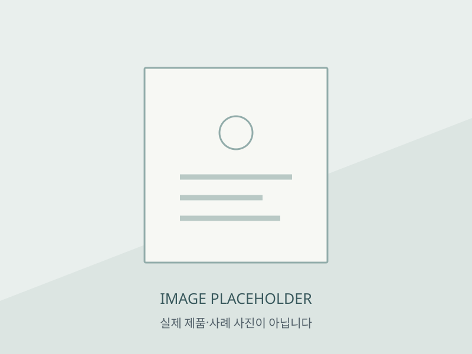

기술소개
기술 원문을 보존하면서 이해하기 쉬운 순서로 재배치하는 시안입니다.
제작 원리
AS-IS · 기존 문구NANO Chemical Etching (나노 케미컬 에칭)
당사가 개발한 “NANO CHEMICAL ETCHING” 기법은 스테인레스 스틸판, 동판 등의 금속판 위에 육안으로 식별키 어려운 1㎠당 1,000~26,000 개의 미세한 입자를 각인시키는 초미세립 가공기술로, 실외에서는 1,000년 실내에서는 20,000년 이상 보존이 가능하도록 설계되었으며, 복원기술의 응용으로 일반사진뿐 아니라 훼손, 변색, 퇴색된 사진, 이미지에 대해서도 높은 복원율을 보인다.
용어 풀이·수치의 적용 조건과 증빙은 기술 담당자의 확인 후 추가합니다. 보존 기간·독점성·생산량 주장은 검증된 새 보증으로 표시하지 않습니다.
기존 기술 특징
- 사진 또는 그림, 글 등의 극미세한 부분까지 모두 표현 가능
- 실외에서는 1,000년 실내에서는 20,000년 이상 보존이 가능
- 동, 철, 특수철, 알미늄, 스테인레스 스틸, 티타늄 등 소재의 종류 제한 없음
- 크기, 두께, 연속성 등 제한 없음 (1.2×2.4M, 폭1m, 길이50m이상 가능)
- 대량생산체제 (소품의 경우, 일일생산량 10만개 이상 제작 가능)
- 대량생산으로 경제성과 생산성 면에서 타 기법과 비교할 수 없음
- [특허등록] 전세계 최초로 독점적 기술과 제품 (두산백과 Doopedia에 등재)
기술적 사실과 최신성은 별도 검증이 필요합니다.
다른 기법과의 비교
사진·자료 크게 보기
실제 이미지가 아닌 임시 자리입니다. 원본의 내용·모델 대응·사용 허가 확인 후 교체해야 합니다.

기술소개 자료 자리 1
사진의 실제 내용과 모델 대응은 미확인입니다.
기술소개 자료 자리 2
사진의 실제 내용과 모델 대응은 미확인입니다.
본문 이미지 참조 2개 중 2개 자리를 시연합니다. 전체 출처는 하단에 기록했습니다. 참조 수는 제품·사례 수와 다릅니다.
원문과 내부 검토 자료
화면의 섹션·제목은 TO-BE 제안입니다. 아래는 2026-10-26 HTML 소스 조사에서 확보한 원문과 출처이며 현재 운영 정보의 정확성은 별도 확인이 필요합니다.
기존 원문 전체 · 텍스트 64개
텍스트 노드 순서이며 원본 화면의 줄바꿈과 다를 수 있습니다. 기술 주장·조건·날짜는 원문을 인용한 것이며 새 보증이 아닙니다.
- 기술소개
- “인류의 역사는 기록의 역사다(Human history is the history of recordings)”
- 라는 말과 같이 인류의 역사는 고대로부터 기록에 의해 전달되고 있으며, 기록 보존은 역사를 이어가기 위하여 매우 중요하다.
- 일반적인 인화 사진은 종이라는 내•외부 환경으로부터 유약한 소재로 약 50여년 내외 수명의 한계가 있다.
- 이를 대체할
- 획기적인 기술이 메탈포토(METALPHOTO)
- 이다.
- As the saying goes “human history is the history of recordings”. From the ancient times, Human history has been
- delivered by records whose preservation is very important for the continuation of history.
- The photo, which is material of paper vulnerable in both inside and outside environment, had limitation of life of
- approximately 50 years. “(METALPHOTO)” as a product of epoch-making skill is a substitute for paper.
- NANO Chemical Etching (나노 케미컬 에칭)
- 당사가 개발한 “NANO CHEMICAL ETCHING” 기법은 스테인레스 스틸판, 동판 등의 금속판 위에 육안으로 식별키 어려운
- 1㎠당 1,000~26,000
- 개의 미세한 입자를 각인시키는 초미세립 가공기술로,
- 실외에서는 1,000년 실내에서는 20,000년
- 이상 보존이 가능하도록 설계되었으며, 복원기술의 응용으로 일반사진뿐 아니라 훼손, 변색, 퇴색된 사진, 이미지에 대해서도 높은 복원율을 보인다.
- 일반적으로 사진이 자연광, 전구 등의 조명에서 발생되는 자외선 및 적외선에 의해 퇴색되어 통상 50년 정도의 수명을 지니는데 비해, 당사의 메탈포토 기술은 동, 철, 특수철, 알미늄, 스테인레스 스틸, 티타늄 등 소재의 종류와 두께, 크기, 무게의 제한을 받지 않으며
- 기록물의 수명을 반영구적으로 연장
- 시키는 효과를 갖고 있다.
- 메탈포토의 특징
- 1. 사진 또는 그림, 글 등의 극미세한 부분까지 모두 표현 가능
- To be available for fine part of image
- 2. 실외에서는 1,000년 실내에서는 20,000년 이상 보존이 가능
- To be available in preservation for 1,000 years outdoors and 20,000 years indoors
- 3. 동, 철, 특수철, 알미늄, 스테인레스 스틸, 티타늄 등 소재의 종류 제한 없음
- No limitation to the kinds or thickness of materials including bronze, iron, special iron, aluminum, stainless steel and titanium
- 4. 크기, 두께, 연속성 등 제한 없음 (1.2×2.4M, 폭1m, 길이50m이상 가능)
- No limitation to the size more than 1M in width and 50M in length
- 5. 대량생산체제 (소품의 경우, 일일생산량 10만개 이상 제작 가능)
- Mass production system(in case of small size, manufacture of one hundred thousand of units a day is available)
- 6. 대량생산으로 경제성과 생산성 면에서 타 기법과 비교할 수 없음
- Not comparable in terms of unit price and productivity by mass production
- 7. [특허등록] 전세계 최초로 독점적 기술과 제품 (두산백과 Doopedia에 등재)
- [Patent registration] Globally unique proprietary technology and products
- ※ 메탈포토(Metalphoto)는 메탈포토㈜의 독점 제품으로 금속판에 인쇄 등으로 혼란을 주는 유사품에 유의하시기 바랍니다.
- 당사의 제품은 특허, 실용신안, 디자인 등의 지식재산권을 보유하고 있습니다.
- 유사기술과의 비교
- 레이져 ( Laser )
- *레이저를 이용하여 금속판에 구멍을 뚫지 않고 표면을 살짝 녹이는 기법
- – 저 품질, 높은 가격
- – 섬세한 표현이 어려움
- – 단노즐로 소량 소품생산
- – 융점 낮은 금속 작업 어려움
- – 다품종 대량생산 불가
- – 녹여 넘긴 부분에 융용물이 생기며 섬세한 표현이 어려움
- – 매우 거칠게 표현되며, 손상율이 높음
- – 대형작업 어려움
- – 단노즐로 소량 소품생산 가능
- CNC
- *삼각바늘로 고속 회전시켜 파내면서 긁어나가는 기법
- – 단순이미지를 약간만 긁어 표현하므로 사소한 관리부실에도 손상이 큼
- – 미세한 표현이 불가능
- – 소량생산만 가능하여 제작의 한계성이 매우 큼
- – 대량생산과 기능적인 생산이 불가능 함
- 나노 케미컬 에칭
- *스텐, 동판 등 금속판 위에 육안으로 식별키 어려운 1㎠당 1,000 ~ 26,000개의 미세한 구멍으로 형성되는 금속표면 초미세립 나노 테크닉
- – 이미지의 극미세한 부분까지 표현 가능
- – 실외에서 1,000년, 실내에서 20,000년 보존이 가능
- – 대량생산체제 (소품의 경우 1기계당 1일 100,000개 이상 제작 가능)
- – 사이즈 제한 없음 폭1m길이50m이상
- – 표현력이 원본보다 세밀하고 섬세하게 구현
- – 대량생산으로 경제성 수익성 탁월함
- ※ 대량생산으로 단가와 생산성 면에서 他 기술에 비해 비교할 수 없을 정도로 우위
이미지 출처 전체 · 참조 2개
실제 사진은 다운로드·수정·표시하지 않았습니다. 원문 링크를 직접 열 때만 외부 요청이 발생합니다.
- 참조 1 · 기존 alt: 300709089ffe4500cb64c6955b7dbc34http://wooyounms.cafe24.com/wp-content/uploads/2016/05/300709089ffe4500cb64c6955b7dbc34-e1464675927570.jpg
- 참조 2 · 기존 alt: nano2http://wooyounms.cafe24.com/wp-content/uploads/2016/05/nano2-e1464677435138.jpg
기술 주장·수명·생산량의 근거와 요약 문구. 원문 유지 범위·추가 설명·이미지 배정과 다음 행동의 우선순위를 컨펌해야 한다. 담당자와 승인자는 미지정이다.
AP01~AP11 검토 목록